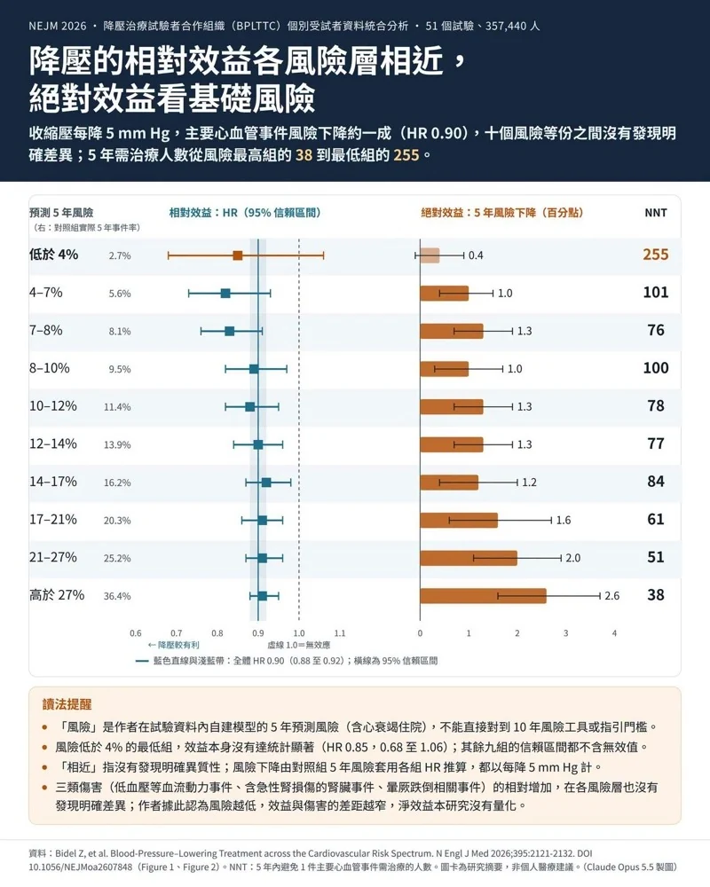

NEJM 2026 · BPLTTC · 個別受試者資料統合分析
高血壓降壓效益與心血管風險分層｜NEJM 2026
收縮壓每降 5 mm Hg，整體較少發生主要心血管事件。相對效益在各層相近，5 年絕對效益則隨基礎風險而異。
- 試驗與受試者
- 51 項 · 357,440 人
- 每降 5 mm Hg
- HR 0.90（0.88–0.92）
- 最高／最低風險等份的 5 年 NNT
- 38／255 人
1. 研究設計與受試者基線特徵
Bidel 等人將 51 項降壓試驗的個別受試者資料合併分析，依試驗資料推估的 5 年基礎心血管風險分成十等份。研究估計每降低 5 mm Hg 收縮壓時的相對與絕對效益。NEJM 原文
- 納入規模：整合 51 項隨機對照試驗（RCT）、共 357,440 位受試者原始資料（每組皆 ≥1,000 人年），包含 20 項安慰劑對照、23 項主動對照與 8 項降壓強度試驗。
- 主要終點（Primary Outcome）：首次主要心血管事件（中風、缺血性心臟病、心衰竭導致住院或死亡）。
- 全體基線輪廓：平均年齡 65 歲（SD 9.7）、女性占 41.6%（148,602 人）、平均基礎血壓 152 / 87 mm Hg，中位預測 5 年風險 12.3%（IQR 7.6%–19%），十等份間風險跨度達 14 倍。
- 最低組 vs 最高組對照：
- 第 1 等份（預測 5 年風險 <4%）：平均預測風險 3%，平均血壓 153.5 / 91.3 mm Hg，既有 CVD 11.6%、糖尿病 11.1%，且半數已服降壓藥。
- 第 10 等份（預測 5 年風險 >27%）：平均預測風險 41.6%，平均年齡 72.8 歲，平均血壓 158.4 / 83.2 mm Hg，既有 CVD 55.4%、糖尿病 53.8%。
2. 核心圖表與十個風險等份完整數據表

| 風險等份 | 預測 5 年風險 | 對照組實際 5 年事件率 | 相對效益（每降 5 mm Hg） | 5 年絕對風險下降（ARR） | 5 年 NNT | 臨床判讀 |
|---|---|---|---|---|---|---|
| 第 1 等份（最低） | <4% | 2.7% | HR 0.85（0.68–1.06）未達顯著 | 0.4 百分點 | 255 人 | 估計較不精確，信賴區間包含無效值 |
| 第 2 等份 | 4–7% | 5.6% | 95% CI < 1.0（顯著） | 1.0 百分點 | 101 人 | 相對效益顯著，每百人治療 5 年少 1 件事件 |
| 第 3 等份 | 7–8% | 8.1% | 95% CI < 1.0（顯著） | 1.3 百分點 | 76 人 | 絕對效益擴大，NNT 降至 80 人以下 |
| 第 4 等份 | 8–10% | 9.5% | 95% CI < 1.0（顯著） | 1.0 百分點 | 100 人 | 點估計近 0.90，絕對效益約 1 個百分點 |
| 第 5 等份 | 10–12% | 11.4% | 95% CI < 1.0（顯著） | 1.3 百分點 | 78 人 | 中位風險附近，藥物預防效益穩定明確 |
| 第 6 等份 | 12–14% | 13.9% | 95% CI < 1.0（顯著） | 1.3 百分點 | 77 人 | 與全體平均 HR 0.90 高度一致 |
| 第 7 等份 | 14–17% | 16.2% | 95% CI < 1.0（顯著） | 1.2 百分點 | 84 人 | 中高風險群，維持明確事件減少效益 |
| 第 8 等份 | 17–21% | 20.3% | 95% CI < 1.0（顯著） | 1.6 百分點 | 61 人 | 對照組 5 年事件率破二成，NNT 明顯縮短 |
| 第 9 等份 | 21–27% | 25.2% | 95% CI < 1.0（顯著） | 2.0 百分點 | 51 人 | 高風險族群，每降 5 mm Hg 少 2 個百分點事件 |
| 第 10 等份（最高） | >27% | 36.4% | 95% CI < 1.0（顯著） | 2.6 百分點 | 38 人 | 本研究中估計的絕對效益最大 |
3. 絕對效益 vs 不良事件平衡
- 相對效益一致，絕對效益看基礎風險：在考量預測心血管風險後，單獨依基礎血壓分層對絕對效益的額外增幅微小（HCPLive 2026）。
- 三類不良事件跨層相對增幅相近：
- 血流動力事件：低血壓（hypotension）、姿態性頭暈、心悸、心搏過緩。
- 腎臟事件：含急性腎損傷（AKI）及末期腎臟病（ESRD）相關事件。
- 暈厥與跌倒相關事件：syncope 與跌倒外傷。
- 臨床意涵：各層安全事件的相對增加相近，絕對傷害仍可能因人而異。全分析中介入組／對照組每千人年事件率：心血管或血流動力事件 12.0／6.5，腎臟事件 3.3／2.2，神經前庭或跌倒相關事件 19.1／16.6。這些是全分析的事件率，與各風險層 5 年 ARR 的時間尺度及分母不同。
4. 臨床讀法提醒與四大外推限制
臨床外推的四項限制
- 不直接適用「130–139 mm Hg 且未服藥」低風險者：最低風險組平均基礎 SBP 仍有 153.5 mm Hg，且半數已正在服藥，故本研究未直接回答輕度高血壓低風險未用藥者是否該立即開藥。
- 自建 5 年風險模型 ≠ 10 年指引門檻：作者於試驗資料內自建 5 年預測風險（含心衰竭住院），不可直接換算為 AHA PREVENT-CVD 或 ESC SCORE2 的 10 年風險門檻。
- 最低組（<4%）本身未達統計顯著：HR 0.85（95% CI 0.68–1.06）橫跨無效值 1.0；其餘九組 95% CI 皆不含 1.0。
- 淨效益未正式量化：作者據效益與傷害趨勢推論低風險者差距較窄，但未計算加權後的單一淨效益分數。
5. 國際與台灣高血壓指引對照及門診 SDM 實務
| 文獻／指引 | 風險評估工具與時間窗 | 血壓 130–139 / 80–89 處置原則 | 主要降壓目標 |
|---|---|---|---|
| NEJM 2026 BPLTTC | 試驗自建 5 年模型（含心衰住院） | 未直接涵蓋未服藥低風險 130–139（最低組平均 SBP 153.5） | 分析每降 5 mm Hg 效應 |
| 2025 AHA/ACC 指引 | PREVENT-CVD 10 年總 CVD 風險 | PREVENT ≥7.5%（或 CVD/DM/CKD）建議加用降壓藥；<7.5% 者先調整生活 3–6 個月，若仍 ≥130/80，建議開始藥物治療 | <130/80 mm Hg |
| 2024 ESC 指引 | SCORE2 / SCORE2-OP 10 年風險＋HMOD | 歸類為 Elevated BP；高風險者生活調整 3 個月仍 ≥130/80 即給藥 | 多數服藥成人 SBP 120–129 mm Hg |
| 2022 台灣 TSOC/THS 指引 | 共病（ASCVD、DM、CKD）、HMOD 與危險因子 | 以居家血壓 722 確診 ≥130/80；高風險即用藥，低風險優先 S-ABCDE | 居家血壓普遍目標 <130/80 mm Hg |
門診 SDM 溝通建議
- 先確認量測與適用指引。台灣可用 722 居家血壓作為評估依據，再看 ASCVD、糖尿病、CKD、衰弱與姿勢性症狀。
- 用研究中的群體估計說明效益。在最高等份，每 100 人追蹤 5 年約少 2.6 件主要心血管事件，最低等份約少 0.4 件，後者信賴區間包含無效值。兩端的 38 與 255 為研究群體 NNT。
- 和病人一起確認治療優先順序。考量頭暈、跌倒、腎功能與用藥負擔。即使風險評分相似，治療選擇仍須依血壓量測、共病與耐受度評估。
6. 特定族群降壓目標與用藥注意對照
| 特定族群 | 2025 AHA/ACC | 2024 ESC | 2024 KDIGO / 2022–2024 台灣 TSOC | 用藥與安全監測重點 |
|---|---|---|---|---|
| 一般健康高齡者（無衰弱） | SBP <130 mm Hg，依耐受度與照護目標調整（PMC） | 可耐受者 SBP 120–129 mm Hg（PMC） | 台灣：居家 <130/80 mm Hg（TSOC/THS） | 年齡非容許高血壓理由；先測立姿血壓排除姿態性低血壓 |
| 高齡衰弱／≥85 歲／預期壽命有限 | 採個別化寬鬆目標（PMC） | 依「可合理達到的最低血壓」與耐受度設定個別目標（ESC 比較） | 台灣：依衰弱與耐受度個別放寬 | 緩慢滴定；留意利尿劑脫水、β-blocker 心搏過緩與跌倒風險 |
| 糖尿病腎病變（DKD）／非透析 CKD | <130/80 mm Hg；常規檢驗 UACR（PMC） | eGFR >30 可耐受下 120–129 / 70–79 mm Hg；eGFR 更低採個別化 | KDIGO 2024：標準化診間 SBP <120 mm Hg（2B）；台灣 2024 TSOC：<130/80 | 合併白蛋白尿者依適應症使用 ACEi 或 ARB，避免合併兩者。起始或調整後依病況追蹤血壓、肌酸酐及血鉀。SGLT2i 等器官保護治療依各自適應症評估。 |
| 糖尿病（無嚴重 CKD） | ≥130/80 即用藥，目標 <130/80 mm Hg | 高風險族群：可耐受下 120–129 / 70–79 mm Hg | 台灣：居家 <130/80 mm Hg | 合併白蛋白尿首選 ACEi/ARB；善用複方單錠（SPC） |
| 既有 ASCVD／冠心病／慢性腦中風 | 直接用藥，目標 <130/80 mm Hg | 可耐受下 120–129 / 70–79 mm Hg | 台灣：居家 <130/80 mm Hg（慢性期） | 有較高基礎風險的可能。依個別風險、耐受度與病況評估，冠心病留意舒張壓過低。 |
| 懷孕期慢性高血壓 | 呼應 CHAP 試驗，目標 <140/90 mm Hg（PMC） | 積極控制避免重度併發症並兼顧胎盤灌流 | 台灣：備孕與妊娠選藥及目標依產科指引 | 妊娠期避免 ACEi、ARB。依產科指引及共病選藥與監測。 |
- DKD 與衰弱高齡：同一診斷在研究中可能橫跨多個風險層。KDIGO 的 SBP <120 mm Hg 以標準化診間量測及可耐受為前提；衰弱、姿勢性症狀或預期壽命有限時應個別化。
7. 實證查核與參考文獻
- Bidel Z, et al. Blood-Pressure–Lowering Treatment across the Cardiovascular Risk Spectrum. N Engl J Med 2026;395:2121-2132. DOI · PubMed.
- Rahimi K, Bidel Z, Nazarzadeh M, et al. Blood Pressure Treatment Shows Consistent Benefit Across Cardiovascular Risk Spectrum (HCPLive, Sep 21, 2026).
- Blood Pressure Lowering Treatment Trialists’ Collaboration. Pharmacological blood pressure lowering for primary and secondary prevention of cardiovascular disease across different levels of blood pressure. The Lancet 2021;397:1625-1636. [PubMed] [PMC 全文]
- 2025 AHA/ACC Multisociety High Blood Pressure Guideline. [AHA Top Things to Know] [ACC Clinical Guidance] [AHA PREVENT™ Online Calculator]
- McEvoy JW, et al. 2024 ESC Guidelines for the management of elevated blood pressure and hypertension. Eur Heart J 2024;45:3912-4018. [PubMed] [PMC 評述]
- Wang TD, Chiang CE, Chao TH, et al. 2022 Guidelines of the TSOC and THS for the Management of Hypertension. Acta Cardiol Sin 2022;38:225-325. [PMC 全文]；2024 TSOC Primary Prevention of ASCVD Guidelines [PMC 全文]
- KDIGO 2024 Clinical Practice Guideline for the Evaluation and Management of Chronic Kidney Disease. [Executive Summary PDF] [CKD 高血壓評述 PMC]
- Special Populations Reviews: 2025 AHA/ACC Hypertension Guidelines [PMC]；2024 ESC Elderly & Frail ALARA [PMC]；2024 European Guidelines Comparison [PDF]